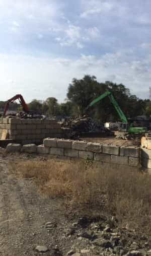
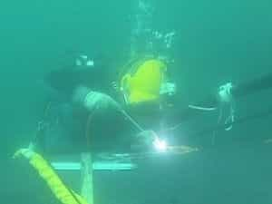

< < < Back
What It’s Like To Be A Welder – Return Of Kings
By day, I work in a scrap yard. It is not glamorous, but glamour does not pay my bills. In the evening, I teach in a welding program at a community college.
Like many others, I once bought into the fallacy that you need a piece of paper from a university to succeed in life. At the age of thirty, I graduated from a university with an undergraduate degree, and the customary debt, which came along with it. Twenty-nine years later, I see how wrong I was.
Soon after graduating, I obtained an office job and moved to a city where I knew no one. The job I was so optimistic about turned out to be like marriage to a crack whore. Each day was as if walking through a minefield full of dysfunctional women, emasculated men, drama, backstabbing, cat-fights, and every other problem associated with modern workplaces. Worse yet, the cut male managers allowed trim to be in charge resulting in a fucked up toxic culture. After three tumultuous and abusive years, I found myself unceremoniously kicked to the curb, and surprisingly relieved.
After a lengthy stint of unemployment, I landed an entry-level job in a metal fabrication company. One of the benefits offered was tuition reimbursement for work related classes. I enrolled in welding classes at night, and upgraded my skills, all on my employer’s dime.
I immediately noticed a difference from my previous job. I worked exclusively with men. Except for a few token assholes, the men liked their solitude, did their jobs, and left each other alone. The work was varied, creative, and with overtime, the pay was decent. The fact that I had a work ethic, showed up every day on time, and desired to learn earned me respect quickly.
I eventually went down a different path, but returned to welding part-time as an adjunct instructor.
Welding is the joining of two metal pieces or parts by applying heat. A filler metal, or electrode, helps to make the joint. Power source supplies electricity required for heat, and a shielding gas or flux-covered electrode aids in the welding process.
The most common welding processes are Gas Metal Arc Welding (GMAW), Flux Core Arc Welding (FCAW), Gas Tungsten Arc Welding (GTAW), and Shielded Metal Arc Welding (SMAW). Of these, Gas Metal Arc Welding is the easiest to learn and offers the fastest production. Welding involves both Ferrous (steel) and Non-ferrous metals (aluminum, stainless steel).

Why Welding?
1. According to a Bureau of Labor report, the need for welders will grow by 26 percent by 2020.
2. According to a National Association of Manufacturers report, nearly 81 percent of manufacturers in the United States report that they cannot find skilled welders to meet demand.
3. The American Welding Society reports that the average age for a welder is now in the mid-fifties
4. Entry-level wages in my region average $28,000-$40,000 annually, with skilled welders earning $50,000 and more after five years in the trade.
I frequently hear from employers who are desperate for skilled welders. One plant manager told me “there are too many computer jockeys and not enough people who can weld and turn a wrench.” Another manufacturer told me “we have over a dozen welders retiring and no one to replace them”. Further, the school I teach at has more jobs available than they have students enrolled.
What Welders Do
Welders work in manufacturing, construction, maintenance repair facilities, and service companies. Welders typically work eight-hour shifts and a five-day week, but overtime is common. Welders often perform other duties like operating metal fabrication equipment and doing assembly work.
The more skills a welder develops, the more value and earning potential he has. For example, being able to weld, cut and fit up metals, and read weld symbols and prints will command a higher wage. Becoming certified in certain weld procedures also increases a welder’s wages and marketability.
Qualifications

Welding is the quintessential blue-collar job. It is physically demanding, hot, dirty, and requires a high degree of skill. Other personal characteristics are good eyesight and hand eye coordination, good manual dexterity, and good concentration.
Training
Community colleges offer affordable training for entry-level jobs in welding. Most programs are nine months, but my school also offers a sixteen-week work ready certificate in welding. Students learn common welding processes, thermal cutting processes, and blueprint reading. Unlike the typical ivory palace college professors, instructors are required to have a minimum of three years related and verifiable industrial experience. Job placement is also good.
Additional Facts

Despite a decent paying skill in high demand, clueless parents and educators continue to dissuade young men from entering blue-collar trades like welding. The result has been an entire generation of young men ruined by hostile four-year colleges, worthless degrees, and insurmountable debt.
Perhaps you are a perceptive and bright young ROK reader considering a career change. In closing, consider these facts.
1. You will always have employment as a welder.
2. Welding skills are highly transferable. You can carry these skills to your next, and often higher paying job.
3. Unlike many white-collar corporate jobs of today, the average welder’s wages increase with skill. Overtime, merit increases, and production bonuses are common benefits for welders.
4. At the end of your shift, you can leave your job at the door.
5. Welding offers a level of creativity, solitude, and seeing the fruits of your labor. Studies show that welders, machinists, and other blue-collar trades have lower suicide rates than many white-collar professions.
6. Welding is often a “gateway trade” into other even higher paying trades like machinist, multi-craft machinery maintenance, and millwright.
7. Welding is a male dominated occupation. Traditionalist men will find it offers some insulation and respite from the typical feminist diatribe and PC bullshit of today’s corporate world.
Conclusion
How has welding benefited me? First, I developed reasoning skills, something that academia failed to do. I also developed a thorough understanding of how men do the dirty, nasty, and dangerous jobs in this life. Feminists and elitists can marginalize men all they want, but men risk their lives and health to build and maintain their shit.
Further, welding has opened some doors for me, mainly teaching. My ultimate goal is to teach welding full-time, a late life career change if you will, and one I hope will happen.
Read More: Is A Blue Collar Job for You?